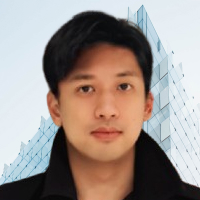
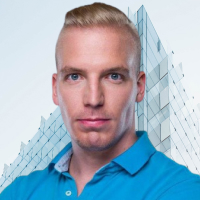
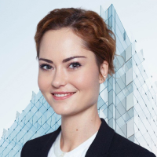
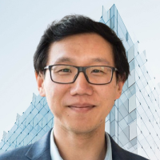
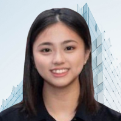
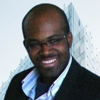

Testimonials
Click or tap on each testimonial to read more
Königsberger Bridges Institute (KBI) is an Estonian (EU) nonprofit dedicated to elevating the competency of humanity and connecting innovation & technology practitioners, subject matter experts, and projects worldwide. Convened in 2017, KBI is run by a global team of young professionals in the AI & data science and the blockchain & trust technology space, delivering the annual competency competitions in both spaces, the International Data Science Olympiad (IDSOL) and International Blockchain Olympiad (IBCOL) respectively.
KBI elevates competencies through training & competitions, expand horizons through learning & networking, adding immersive & intensive experiences.
Learn MoreEnthusiasts, educators, students, parents, practitioners, professionals convene yearly at the Olympiad finals with technological & technical subject matter experts.
Learn MoreKBI is the world's most diverse team in culture, expertise, and mindset
Exec Director of Western Conference

Exec Director of Eastern Conference

Exec Director of Innovation & Technology

Executive Director of Legal Affairs

Dir of Partnerships, Western Conf
Dir of Partnerships, Eastern Conf
Director of Education, AI & Data Science
Director of Education, Trust Tech
Director of Finance
Director of Communications

Director of Operations

Event Director
Elevating competencies through training and competitions since 2017
students participated in KBI programs since 2017
countries participated in KBI activities since 2017
projects started through KBI initiatives since 2017
Click or tap on each testimonial to read more
Don't miss out on what KBI is cooking up anywhere in the world